Modo Turbo
O que é isso ?
É um interpretador de código javascript, ou seja, você escreve código e clica em "Executar" para vê-lo executar passo a passo. É possível avançar e retroceder na simulação.
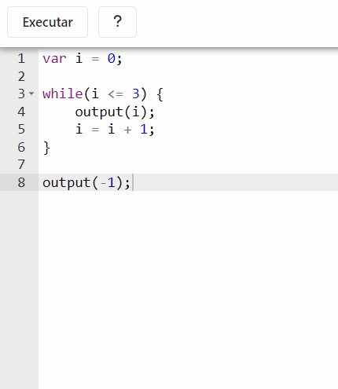
Como uso ?
Escreva um código javascript que desejar e clique em "Executar"
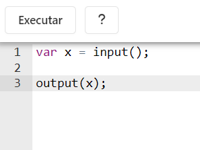
Use os botões para avançar ou retroceder a execução do código
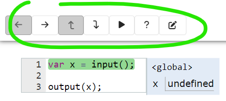
Avança um micro-passo na simulação. Por exemplo, num cálculo
aritmético como 2 + 3/5, ele passa
individualmente por cada etapa da conta
|
|
| Volta um micro-passo na simulação | |
Avança um macro-passo na simulação. Um macro-passo equivale a
vários micro-passos, geralmente significa que a simulação vai
avançar uma linha inteira de uma só vez. Por exemplo, num
cálculo aritmético como 2 + 3/5, ele pula toda a
conta de uma vez.
|
|
| Volta um macro-passo na simulação | |
| Avança a simulação continuamente até o fim (é possível pausar clicando de novo no mesmo botão). Clique e segure para modo turbo. | |
| Volta ao início da simulação (disponível quando a simulação chega ao fim) | |
| Volta ao editor de código |
A área à direita do código mostra as variáveis do programa
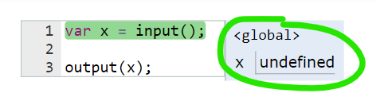
A janela de input permite fornecer um número para o programa calcular
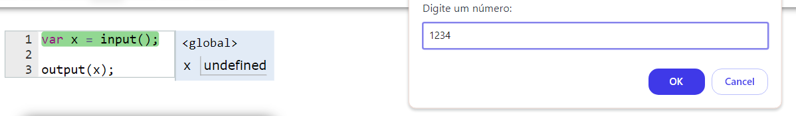
A linha com fundo verde é a próxima linha que o computador irá executar
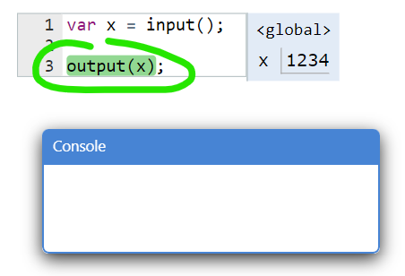
A janela "Console" é onde o programa imprime respostas
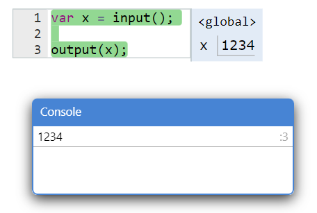
Clique-e-arraste para mover a tela
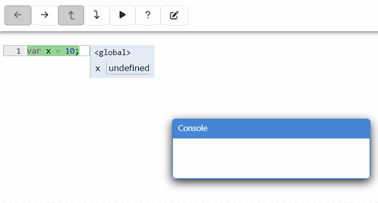
Role o mouse para zoom
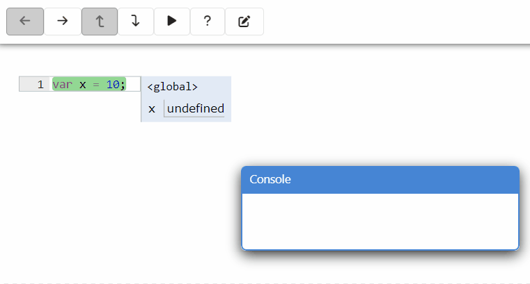
Mova e redimensione o Console
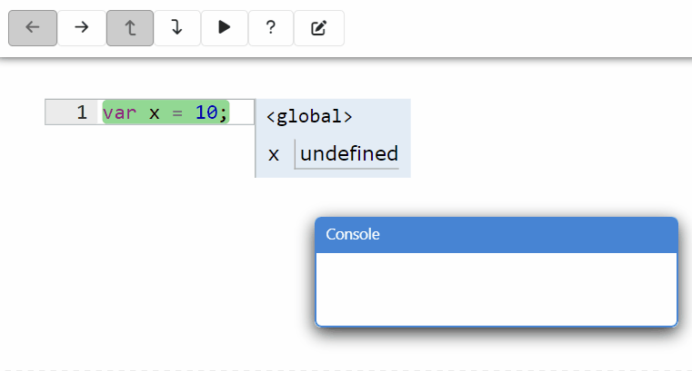
Clique e segure no botão para executar em modo turbo
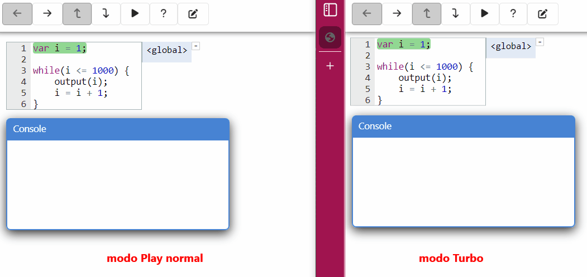
Use o comando debugger no modo turbo para pausar
quando o código chegar naquela linha
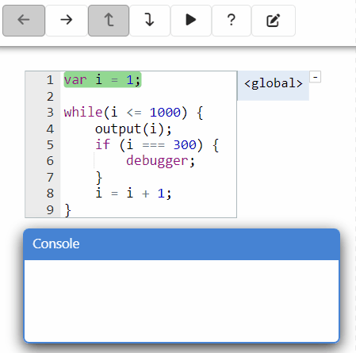
Você pode ver mais detalhes na página de ajuda (botão ).
Teste rápido
Aqui você pode testar rapidamente seu código. Digite as entradas abaixo; quando o programa pedir números, eles serão lidos um a um. Depois clique em Executar teste para rodar o código e ver a saída.